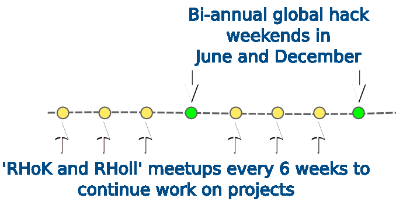

Random Hacks of Kindness
Information Meeting
What is RHoK?
Technologists and domain experts building solutions to real world problems.
Organisations that are involved
What can a problem owner expect to accomplish?
A good start on an application with a group of developers and analysts
What will a problem owner do?
- Be passionate about their problem
- Engaged for questions and answers all the way through to deployment
- Scope out your domain space
- Be prepared to help lead your team and answer questions
The weekend format
- Day 1
- Problems owners pitch their problems
- Setup and form groups "vote with your feet"
- Start developing by 11
- Day 2
- Work on the project til 15:30
- Present your work to other teams
What happens after the hack weekend?
Bagong Barrio Education Fund Project
BBEF Project
BBEF Project
Universal Emergency Response Management Project
Universal Emergency Response Management Project
Universal Emergency Response Management Project
Warrandyte Fire Dashboard Project
Warrandyte Fire Dashboard Project
Warrandyte Fire Dashboard Project
Resilience Project
Resilience Project
What's next?
- Nov 12
- Sydney Information Night - DiUS Offices
- Dec 7-8
- Global Hack weekend - Ninefold Offices
To find out more
http://meetup.com/rhok-sydney/
http://rhoksydney.org
https://www.eventbrite.com/event/9022156513
Twitter: @rhoksydney and @rhokmelb
Thanks
Paula - @Paulangov
Steve - ssmithwick@dius.com.au